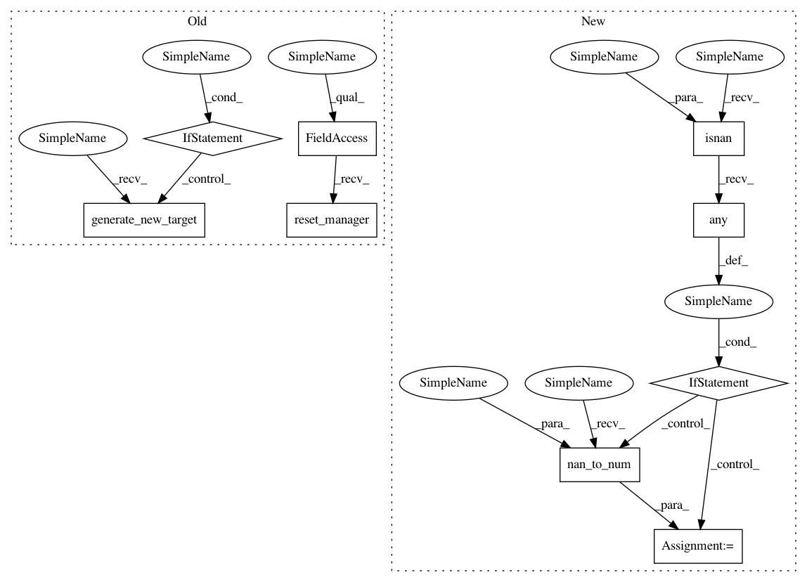

efa8a845257e0d53a0e1c6c3bfbccc7db6e6f43a,osim/env/arm.py,Arm2DEnv,reset,#Arm2DEnv#Any#,62
Before Change
def reset(self, random_target = True):
obs = super(Arm2DEnv, self).reset()
if random_target:
self.generate_new_target()
self.osim_model.reset_manager()
return obs
def __init__(self, *args, **kwargs):
super(Arm2DEnv, self).__init__(*args, **kwargs)
After Change
class Arm2DVecEnv(Arm2DEnv):
def reset(self, obs_as_dict=False):
obs = super(Arm2DVecEnv, self).reset(obs_as_dict=obs_as_dict)
if np.isnan(obs).any():
obs = np.nan_to_num(obs)
return obs
def step(self, action, obs_as_dict=False):
if np.isnan(action).any():
action = np.nan_to_num(action)
In pattern: SUPERPATTERN
Frequency: 3
Non-data size: 9
Instances
Project Name: stanfordnmbl/osim-rl
Commit Name: efa8a845257e0d53a0e1c6c3bfbccc7db6e6f43a
Time: 2019-07-30
Author: ssm0445@gmail.com
File Name: osim/env/arm.py
Class Name: Arm2DEnv
Method Name: reset
Project Name: stanfordnmbl/osim-rl
Commit Name: a28b19e6db3b865338111234fd178b7e0b17ec70
Time: 2019-08-05
Author: ssm0445@gmail.com
File Name: osim/env/arm.py
Class Name: Arm2DEnv
Method Name: reset
Project Name: stanfordnmbl/osim-rl
Commit Name: fe502215dd348b04222d589e415f9ded4b0a99bd
Time: 2019-08-05
Author: ssm0445@gmail.com
File Name: osim/env/arm.py
Class Name: Arm2DEnv
Method Name: reset